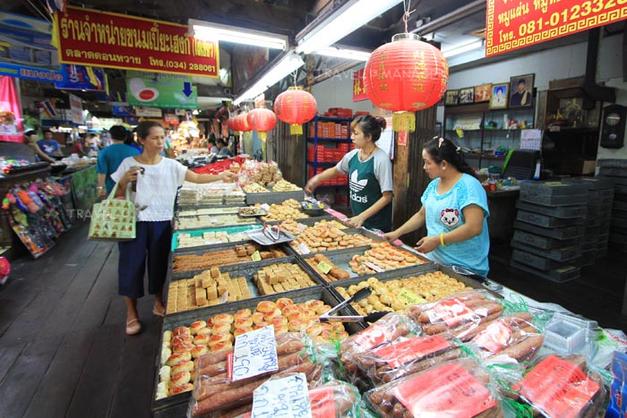

Don Wai Floating Market
ในตลาดค่อนข้างกว้างและมีอาหารให้เลือกหลากหลายครับโดยเฉพาะอาหารท้องถิ่นอย่างเช่นส้มโอ มาแล้วพลาดไม่ได้ส้มส้มโอหวานมาก ซื้อกับเป็นของฝากติดไม้ติดมือได้เลยครับ และยังมีของกินอื่นๆอีกมากมายครับไม่ว่าจะเป็นห้อยจ๊อ ปลาทอดกรอบ หมี่กรอบ ขนมเปี๊ยะ และอื่นๆอีกมากมาย ที่สำคัญราคาไม่แพงด้วยครับ มาเที่ยวตลาดน้ำดอนหวายจะได้ของกลับบ้านเต็มมือแน่แน่ ใครที่กำลังมองหาที่เที่ยว ประหยัดงบสถานที่แห่งนี้ก็เป็นอีกที่ที่ไม่ควรพลาด